3 Exercise 3
3.1 Recap
In the first and second R sessions, we covered the following:
Exercise 1 and 2 Tasks
T1: Downloading and Loading ESS Subset on R. ✅
T2: Introduction to Key Commands ✅
T3: Plotting Variable Distributions ✅
T4: Cross Country and Mode Comparision ✅
T5: Splitting Variable of Choice ✅
4 Recap Exercise
For this exercise, we have some R cheat sheets and a BINGO! But first, a recap exercise, so we do not forget what we did in the last two sessions!
- Load the ESS subset dataset into your environment
- Confirm that the dataset is available
- View the dataset
- Check its dimensions
- Look at the column names
- Explore any two variable using basic summaries
- Create a quick distribution plot for any variable
- Compare political interest across countries; look at both counts and proportions
- Choose another variable and split it into two groups
- Compare another variable across these groups
4.1 Cheat Sheets and Bingo!
These cheat sheets help list various data transformations and tidying your environment code syntax without needing to memorize every single function argument:
Here is the Bingo for today:
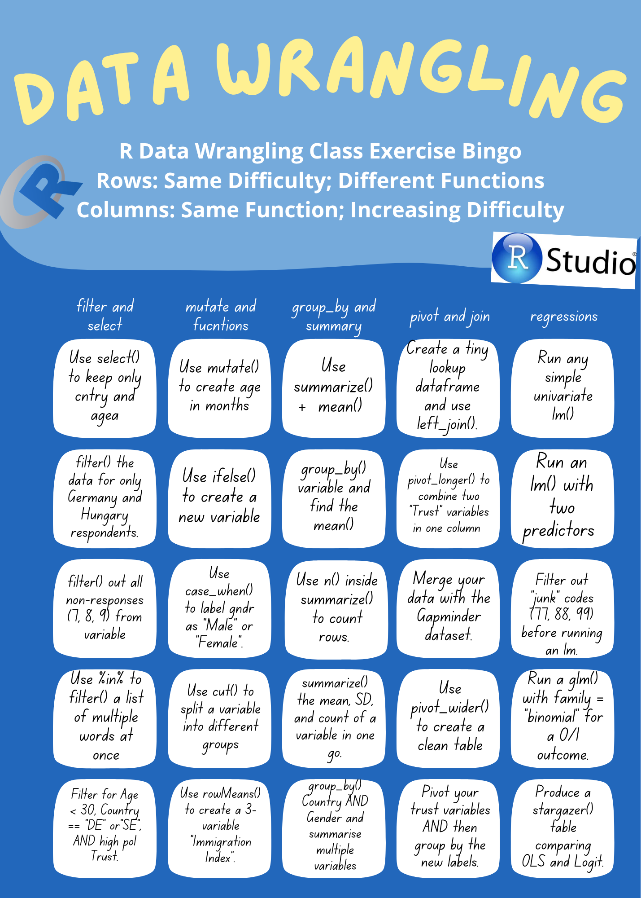
4.2 Splitting variable (mutate() & cut())
From Pipe in R: A Guide
The pipe operator, formerly written as %>%, was a longstanding feature of the magrittr package for R. The new version, written as |>, is largely the same. It takes the output of one function and passes it into another function as an argument. This allows us to link a sequence of analysis steps.
To visualize this process, imagine a factory with different machines placed along a conveyor belt. Each machine is a function that performs a stage of our analysis, like filtering or transforming data. The pipe works like a conveyor belt, transporting the output of one machine to another for further processing.
The pipe is best understood as the word “then”, allowing us to read code like a sentence. We will use it here to select our specific variables and filter out a country.
To look at how it works be can check an example from the ESS_Subset, using a popular set of commands.
Let us also look at R Operators: www.geeksforgeeks.org
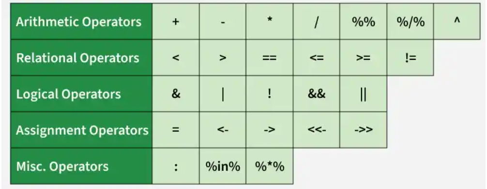
- Using
ifelse()
The ifelse() function is the quick way to split data. It can get quite messy in many cases. It works by evaluating a logical condition and returning one value if TRUE and another if FALSE. To handle multiple splits, you will have to “nest” the functions.
- Using tidyverse with
mutate()andcase_when()
Using tidyverse is cleaner and easy to read. case_when() is the cleaner, more powerful version of ifelse(). It allows you to list multiple conditions sequentially without nesting!
Here is an example:
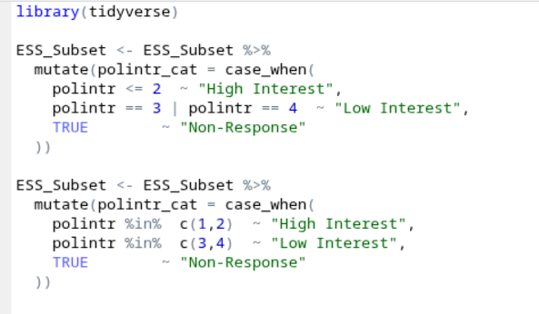
- Using
cut()
The cut() function is specifically designed for converting numeric vectors into factors by cutting them into intervals. This is often the best way to split the data which is separated into equal/unequal but consistant intervals.
Here is an example:
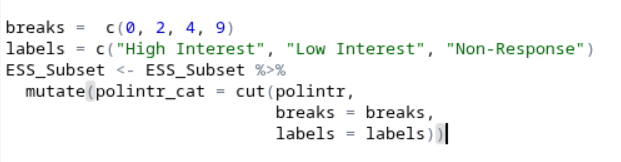
Use mutate() whenever you need to add a new column to your dataset without changing the original variables. Use case_when() for complex logic (if/then) and cut() when you specifically want to create “buckets” or bins from numeric ranges.
Inside a pipe, call mutate(new_column_name = calculation/logic). Within that, use case_when() to map specific values or cut() to define breaks and labels for numeric intervals.
4.3 Sub-populations (filter())
Use Case: Narrowing your focus. In the ESS, this is most commonly used to select specific countries for comparison or to “clean” the data by removing non-response codes (77, 88, 99) before doing math. filter() is one of the most commonly used functions prior to further aggregations.
Use filter() at the beginning of your analysis to remove observations that aren’t relevant to your research question, or to isolate specific groups
Provide a logical condition inside the function, such as == (equal to), != (not equal to), > (greater than), or %in% (contained within a list)
When we mant to filter out multiple specific values without writing ten ==statements
# Filter for 2 countries of interest
target_countries <- c("DE","SE")
ESS_2country <- ESS_Subset %>%
filter(cntry %in% target_countries)
# Filtering for specific countries AND valid answers (Excluding 7, 8, and 9 from the polintr variable)
df_clean <- ESS_Subset %>%
filter(cntry %in% c("DE", "SE"),
!polintr %in% c(7, 8, 9))
4.4 Combining Datasets (merge())
Use Case: Enriching your data. In social sciences, we often merge different types of datasets to enrich our findings. For example, we can merge individual-level survey data (ESS) with country-level context (like Gapminder’s GDP or World Bank data) to see how national environments affect individual behavior :)
Use left_join() (the tidyverse version of merge()) when you have two separate tables that share a common "key" variable (for example cntry in one of our examples) and, you want to bring them together into one wide dataframe.
data_a %>% left_join(data_b, by = "common_column"). The “left” join ensures you keep all rows from your primary dataset.
#Simple ESS Example
# Sometimes it is possible to merge two datasets as well! In this example let us add the full names of the country using merge
# Note: This is a simple merge example, it is better to use mutate when basically adding new columns like this!
# First check what are the countries we have
table(ESS_Subset$cntry)
DE HU SE
2420 2118 1230 # Nuanced ESS example
# What if there was another dataset we can merge this data with!
# *This is just an example
library(gapminder)
# gapminder has full country names, so we also add those!
merge_help <- tibble(cntry = c("DE", "HU", "SE"),
country = c("Germany", "Hungary", "Sweden"))
ess_with_names <- ESS_Subset %>% left_join(merge_help, by = "cntry")
# since we do not want the combinated dataset to explode, lets filter for only one year, in this data the latest is 2007.
gap_filtered <- gapminder %>% filter(year == 2007)
combined_data <- ess_with_names %>% left_join(gap_filtered, by = "country")
4.5 Aggregations (group_by())
Use Case: Moving from individuals to groups. Instead of looking at all the respondent individually, you might want to see the different group based scores for each country. This is the foundation of most descriptive tables in research.
Whenever you need a “summary” statistic (mean, median, count) for different categories rather than the whole dataset.
Always use group_by() and summarize() together. group_by() sets the “buckets,” and summarize() performs the calculation (like mean() or n()) inside each bucket.
# A tibble: 2 × 2
gndr mean_age
<dbl> <dbl>
1 1 57.2
2 2 58.7
4.6 Reshaping data (pivot_long() & pivot_wider())
Use case: Getting data into the right “shape.”
# Let us understand this using gapminder.
gap_wide <- gapminder %>%
filter(country %in% c("Germany", "Hungary", "Sweden"),
year %in% c(1997, 2002, 2007)) %>%
select(country, year, gdpPercap) %>%
pivot_wider(names_from = year, values_from = gdpPercap)
# helpful for ggplot!
gap_long <- gap_wide %>%
pivot_longer(cols = `1997`:`2007`,
names_to = "year",
values_to = "gdp")Use pivot_longer() when you have multiple columns (like trust_police, trust_parl etc.) and you would want like to turn them into a single “Type” column for easier plotting. Use pivot_wider() when you want to create a clean summary table for a report. However, the type and use cases depend mainly on the specific use cases!
pivot_longer(cols = columns_to_move, names_to = "new_label_col", values_to = "new_value_col")
# Without Pivot
trust_comparison_nopiv <- ESS_Subset %>%
group_by(cntry) %>%
summarize(
Police = mean(trstplc, na.rm = TRUE),
Parliament = mean(trstprl, na.rm = TRUE)
)
# With Pivot
# Pivoting helps with making cleaner tables and ggplot graphs!
trust_comparison_piv <- ESS_Subset %>%
group_by(cntry) %>%
summarize(
Police = mean(trstplc, na.rm = TRUE),
Parliament = mean(trstprl, na.rm = TRUE)
) %>%
pivot_longer(
cols = c(Police, Parliament),
names_to = "Institution",
values_to = "Avg_Trust_Score"
)
4.7 Transformations (a <- b +c)
Use case: Constructing indices. We often average several related questions (like three questions on immigration) to create a more reliable “Index” or “Scale.”
When you need to perform math across columns (row-wise) to create a total score or a mean score for a respondent.
Use mutate() and standard math symbols (+, -, /, *). For averaging multiple columns while handling missing data, rowMeans() is the standard tool.
Transformation code can be:
- addition: A <- B + C
- subtraction: A <- B - C
- division: A <- B / C
- multiplication: A <- B * C
- power: A <- B^2
Common statistical functions:
- minimum value: MIN <-
min(A) - maximum value: MAX <-
max(A) - absolute value: A <-
abs(A) - sum: SUM_A <-
sum(A) - mean: mean_A <-
mean(A) - square root: X <-
sqrt(A) - exponential: X <-
exp(A) - natural logarithm: X <-
log(A)
4.8 Regressions (lm() & glm())
This Reddit post does a great job at explaining what a regression is: What is a Regression?.
Here is a another resource: Ultimate guide to Regression.
Here is a great video which talks about linear regressions:
Here are some interesting sources which explain linear regressions well:
One of the best explainations in Chapter 7 of R for Health Data Science
Another good source: MLU Visual Explainations
For Logistic Regression, here are some really amazing videos by StatQuest by Josh Starmer on Logistic Regressions. If you are interested you can continue on the logistic regression series following the videos!
Furthermore, this link covers everything related to logistic regressions and explainations for all the outputs generated: Chapter 9 in R for Health Data Science
Use lm() for continuous outcomes (like a 0–10 scale). Use logistic regression (via finalfit or glm()) for binary outcomes (like Yes/No or 1/0).
Define your model as y ~ x1 + x2. Use stargazer() to output professional, academic-style tables.
Linear Regression:
library(stargazer)
Please cite as: Hlavac, Marek (2022). stargazer: Well-Formatted Regression and Summary Statistics Tables. R package version 5.2.3. https://CRAN.R-project.org/package=stargazer # Preparing the Regression Data
# We ensure variables are numeric and filter out NAs (including the ESS 77, 88, 99 codes)
reg_data <- ESS_Subset %>%
mutate(
trust_parl = as.numeric(trstprl),
age = as.numeric(agea),
edu = as.numeric(eduyrs),
pol_int = as.numeric(polintr)
) %>%
filter(
trust_parl <= 10, # Removes 77, 88, 99
pol_int <= 4, # Valid range
!is.na(trust_parl),
!is.na(age),
!is.na(edu),
!is.na(pol_int),
!is.na(gndr)
)
# Testing does age predict trust
fit1 <- lm(trust_parl ~ age, data = reg_data)
# Adding education and political interest
fit2 <- lm(trust_parl ~ age + edu + pol_int, data = reg_data)
# 3. Create the Table
stargazer(
fit1, fit2,
type = "text",
title = "Table 1: Predictors of Trust in Parliament",
covariate.labels = c("Age", "Years of Education", "Political Interest")
)
Table 1: Predictors of Trust in Parliament
==================================================================
Dependent variable:
----------------------------------------------
trust_parl
(1) (2)
------------------------------------------------------------------
Age -0.001 -0.001*
(0.0005) (0.0005)
Years of Education 0.019***
(0.005)
Political Interest -0.782***
(0.038)
Constant 5.192*** 6.798***
(0.046) (0.131)
------------------------------------------------------------------
Observations 5,484 5,484
R2 0.0003 0.076
Adjusted R2 0.0001 0.076
Residual Std. Error 2.736 (df = 5482) 2.630 (df = 5480)
F Statistic 1.492 (df = 1; 5482) 151.145*** (df = 3; 5480)
==================================================================
Note: *p<0.1; **p<0.05; ***p<0.01Logistic Regression
# Let us make a binary dependant variable
# polintr: 1=Very, 2=Quite, 3=Hardly, 4=Not at all
logit_data <- ESS_Subset %>%
mutate(
polintr_num = as.numeric(polintr),
high_interest = case_when(
polintr_num <= 2 ~ 1,
polintr_num >= 3 & polintr_num <= 4 ~ 0,
TRUE ~ NA_real_
)
) %>%
filter(!is.na(high_interest))
# let us make the varibale usuable if they are not (remember if the varibale is not numeric, convert it to numeric). We also need to limit the data to 0-10 as values like 88 are not relevant
logit_data <- logit_data %>%
filter(imwbcnt <= 10, imueclt <= 10, imbgeco <= 10)
# Let us fit the logistic regression model
# This basically asks the question: Do immigration attitudes predict political interest?
fit_logit1 <- glm(
high_interest ~ imwbcnt + imueclt + imbgeco,
data = logit_data,
family = binomial
)
# Display results
summary(fit_logit1)
Call:
glm(formula = high_interest ~ imwbcnt + imueclt + imbgeco, family = binomial,
data = logit_data)
Coefficients:
Estimate Std. Error z value Pr(>|z|)
(Intercept) -0.84760 0.06801 -12.463 < 2e-16 ***
imwbcnt 0.02528 0.01896 1.333 0.18250
imueclt 0.06633 0.01749 3.792 0.00015 ***
imbgeco 0.11616 0.01656 7.016 2.29e-12 ***
---
Signif. codes: 0 '***' 0.001 '**' 0.01 '*' 0.05 '.' 0.1 ' ' 1
(Dispersion parameter for binomial family taken to be 1)
Null deviance: 7605.3 on 5533 degrees of freedom
Residual deviance: 7276.0 on 5530 degrees of freedom
AIC: 7284
Number of Fisher Scoring iterations: 4# 4. Adding Socio-Demographic Controls
# Try uncommenting this to see how Age, Gender, and Education impact the model!
# fit_logit2 <- glm(
# high_interest ~ imwbcnt + imueclt + imbgeco +
# agea +
# gndr +
# eduyrs,
# data = logit_data,
# family = binomial
# )
#
# summary(fit_logit2)4.9 BINGO Card Exercise
Let us get back to the BINGO card! How have you been able to progress? Are you confident with the boxes which are done/left!
To summarise, let us look at this short video which talks about the concepts we covered in class today:
Is it looking like this!
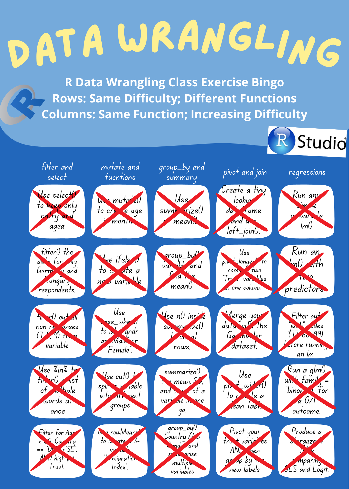
4.10 Next Class: Tables and Graphs
Some graphs/tables in R to give you an idea!
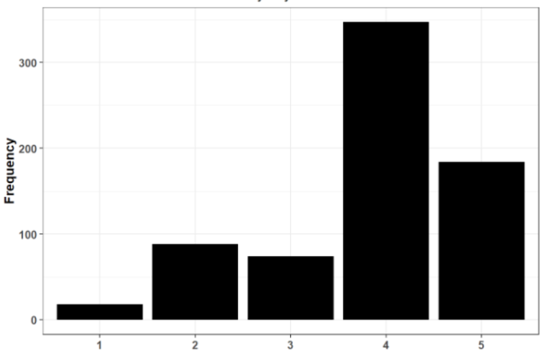
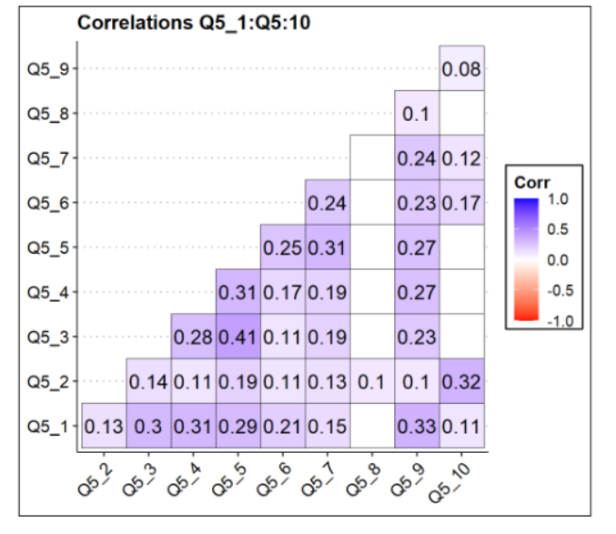
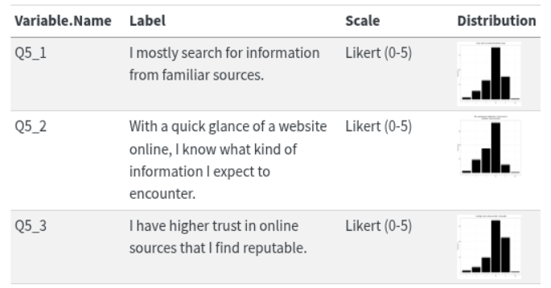
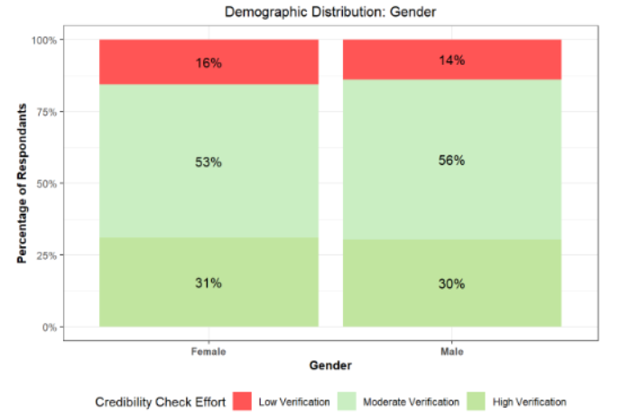
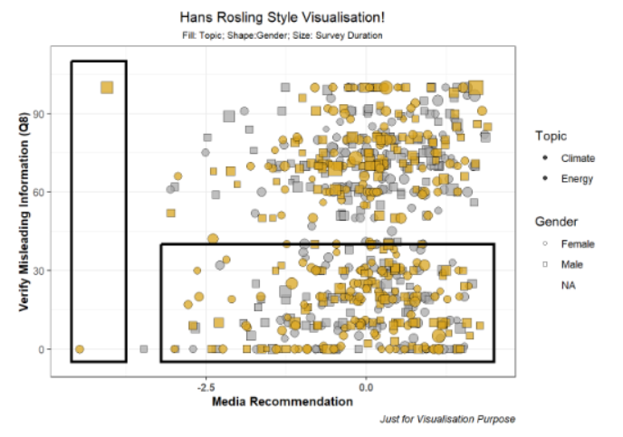
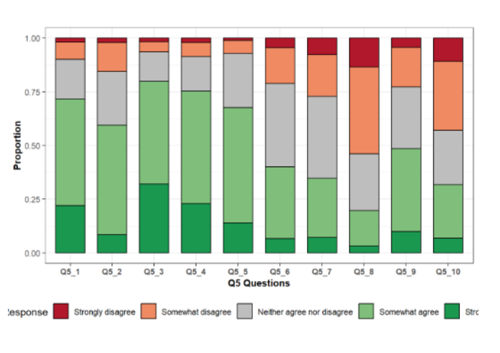